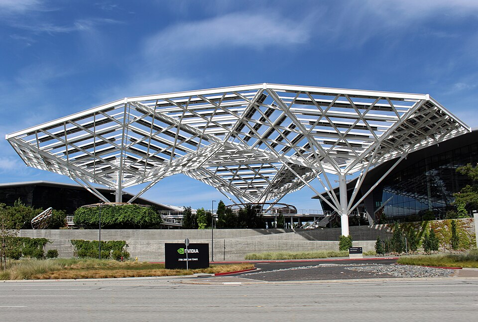

黄仁勋
Jensen Jen-hsun Huang
.jpg)
黄仁勋，拍摄于2014年10月
基本信息
黄仁勋（英语：Jensen Jen-hsun Huang，1963年2月17日—），是一位台湾裔美国籍企业家 、电机工程师，图形芯片公司NVIDIA（英伟达）的共同创办人暨首席执行官。
黄仁勋出生于台湾台南市，9岁时移居美国。他在俄勒冈州立大学获取电机工程学士学位，后于斯坦福大学获得电机工程硕士学位。
1993年，黄仁勋创立NVIDIA，并专注于图形处理单元（GPU）的开发。该公司GeForce系列GPU产品在电子游戏、区块链以及人工智能领域获取了巨大成功，使公司成为全球领先的科技企业之一。黄仁勋以其领导能力和技术创新闻名，他经常在技术论坛和会议上发表演讲，是半导体和科技产业的著名人物。
2024年，随着人工智能浪潮对GPU的需求增加，NVIDIA成为全球市值最大的公司，黄仁勋也因此成为世界排名第10名的富豪，身价超过千亿美元。
早年及家族
黄仁勋1963年出生于台南。父亲黄兴泰为化学工程师，毕业于国立成功大学；母亲罗采秀为教师，出身台南望族罗氏家族。
1972年父母移居泰国后，黄仁勋与哥哥被送到美国亲戚家同住并就读肯塔基州的寄宿学校，毕业后与父母一同迁居俄勒冈州，并就读阿罗哈高中。起初在教会学校，学校氛围并非想象的“精英”，且因为跳级2年后年龄不足，后转到其他学校，他凭着优异成绩还教导其他学生，与一些同学建立友谊。
1978年参加美国乒乓球公开赛，并在青年组双打赛事夺得季军。
1984年，于俄勒冈州立大学获取电机工程学士学位，1992年于斯坦福大学获取电子工程学硕士学位。
据台湾媒体报导，黄仁勋为AMD总裁暨首席执行官苏姿丰的表舅（因为黄仁勋的母亲与苏姿丰的外公是兄妹）。苏一度否认此传闻，但后来承认两人为远房亲戚。
职业生涯
黄仁勋第一份工作是在丹尼餐厅当服务员。大学毕业后，1983年黄仁勋在AMD担任微处理器硬件工程师，1985年至1993年，黄仁勋在LSI Logic担任核心硬件设计总监。
1993年4月，黄仁勋与克里斯·马拉科夫斯基和克蒂斯·普里姆于美国加州共同创办了英伟达，由黄仁勋担任CEO。
1999年，英伟达在纳斯达克挂牌上市，黄仁勋拥有3.6%股权，身价升至高达5亿美元，被财富杂志评为全美40岁以下最富有的人之一。同年被安永会计师事务所评为年度高科技企业家。 2002年，黄仁勋获得南加州大学Daniel J. Epstein工程经理人奖。2004年，荣获无厂半导体协会颁发的张忠谋博士模范领导奖。2005年，成为俄勒冈州立大学杰出校友。2007年，黄仁勋年薪为2460万美元，成为全美第61位最高薪CEO。
2017年，获颁国立交通大学名誉工学博士。2020年，获颁国立台湾大学名誉博士。 2023年5月，因为人工智能热潮，NVIDIA市值首度达到1兆美元，成为第8间市值达到1兆美元的公司，同时黄仁勋身价与2022年相比已经翻倍达到350亿美元。
2024年2月，因为“高性能图形处理单元，点燃人工智能革命”当选2024年美国国家工程院院士。同月因为NVIDIA市值上升使黄仁勋超越钟睒睒成为全球华人首富，在彭博亿万富豪指数升至第21位。
NVIDIA 总部
2024年5月，NVIDIA 第一季财报显示其营收强劲增长，加上人工智能浪潮对GPU的需求增加，NVIDIA股价因此大涨而成为全球市值第2大的公司，仅次微软，黄仁勋也因此身价超过千亿美元，排名福布斯全球富豪榜第11名。。 2025年3月19日,在GTC大会宣布开发人形机器人的技术，全球首个开放式、可完全自定义的基础模型。
个人生活
黄仁勋于俄勒冈州立大学期间，认识了他后来的妻子洛丽·米尔斯（Lori Mills），她当时是他的工程实验室合作伙伴。 1983年，20岁的黄仁勋正在大学实验室担任工程师，当时即向Lori承诺，会在30岁时拥有自己的公司，两人于交往5年后结婚。
黄仁勋婚后育有一女一子，长子为黄胜斌（Spencer Huang），2015年时回到台湾跟朋友一起合资经营酒吧，2022年返回美国入职NVIDIA担任产品经理；女儿为黄敏珊（Madison Huang），从事饭店业，而后跟着黄仁勋在英伟达担任营销经理。
1999年英伟达上市之前，黄仁勋一家住在圣何塞一个入门宅。2003年，黄仁勋搬到了加州洛斯阿图斯山的豪宅，2004年在夏威夷怀勒亚购买了第二套住宅。2017年，黄仁勋用公司法人名义购买以3,800万美元收购了旧金山的一座豪宅。
黄仁勋的肩膀下有一个刺青，图案是NVIDIA的公司商标。起因于某次公司大会，黄仁勋与同事讨论若公司股价到达100美元时，大家要做什么，最后大家决定刺青。随着NVIDIA股价涨破100美元，黄仁勋履行刺青的诺言在左肩下方刺上公司的Logo，黄仁勋他对此的感想是“很痛”。
黄仁勋喜爱狗，支持英伟达员工带狗上班。
荣誉
奖项
- 1999年：安永高科技年度企业家
- 2002年：南加州大学丹尼尔·J·爱泼斯坦工程管理学奖
- 2004年：张忠谋博士模范领袖奖
- 2005年：俄勒冈州立大学杰出校友
- 2007年：硅谷教育基金会先驱商业领袖奖
- 2018年：首届全球边缘运算50大人物
- 2019年10月：哈佛商业评论最佳首席执行官
- 2020年11月：欧洲汽车新闻欧洲之星「年度供应商首席执行官」
- 2021年8月：半导体工业协会罗伯特·N·诺伊斯奖
- 2021及2024年：《时代杂志》百大人物
- 2023年12月：《经济学人》年度最佳首席执行官
- 2023及2024年：《时代杂志》人工智能百大人物名单
- 2024年2月：美国国家工程院院士
- 2024年5月：Gold House A1荣誉
荣誉学位
- 2009年6月：俄勒冈州立大学荣誉博士
- 2017年6月：国立交通大学名誉博士
- 2020年11月：国立台湾大学荣誉博士
- 2024年11月：香港科技大学荣誉博士
言论观点
台湾是个国家
2024年5月29日，黄仁勋在夜市接受记者采访表示：“台湾是世界上最重要的国家之一，是电子产业的中心”，之后在新浪微博引发热议。另外，他在台北国际电脑展，秀出“AI世界地图”，台湾也将成为全球AI中重要国家，以及各方面AI都将与理念相同国家，共同进步以及拥有AI带来的影响力量，民主自由开放平权，所以中国大陆和台湾分属不同颜色跟完全不同政治体制，也再度成为中国大陆焦点。黄仁勋在台期间，除了网络媒体观察者网有所报导之外，中国大陆官方和媒体对此类消息大多选择沉默或忽略。黄仁勋离台后，国务院台湾事务办公室发言人陈斌华在6月12日受媒体访问时表示，对这种极其错误的言论，民众、网民已纷纷表达不满，并重复中国大陆官方的立场：“两岸同属一个中国，台湾从来就不是一个国家”，希望黄仁勋“好好补补课”。
黄仁勋在6月8日受媒体访问，指其言论惹来中国大陆不高兴，对此有何看法时，他表示“我并不是发表地缘政治评论。我就是感谢我们所有的技术合作伙伴的所有支持以及对产业的所有贡献”。
市场和投资
2024年6月4日，黄仁勋在出席记者会前，被问及对中国大陆市场的看法时，他表示中国大陆的市场对他来说非常重要，但因有出口管制，必须遵守。在中国大陆也有许多很棒的合作伙伴，认识20多年了，将继续为他们服务。被问及在台湾的投资机会时，他表示过去一年，台湾科技非常显著，未来几年成长很多，必须投资台湾，建造人工智能超级计算机，这非常重要，台北、台南和高雄都是NVIDIA在台湾潜在的研发中心投资地点。
更多详情请访问：黄仁勋